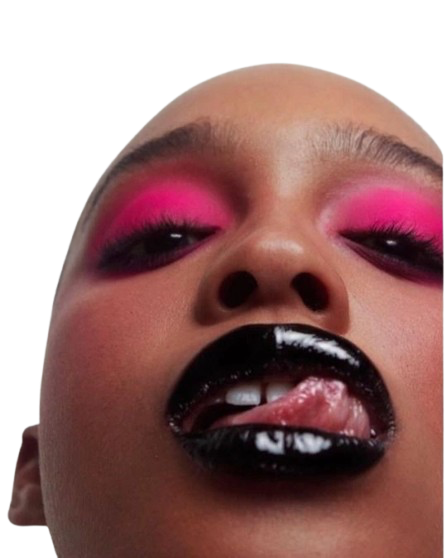

Sobre Afterglow

Nacidxs en la intersección entre la subcultura digital, el diseño editorial de vanguardia y la cosmética de alta precisión, AFTERGLOW® nace con un fin: el minimalismo comercial para crear herramientas de autoexpresión sin reglas. Formulación de alto pigmento, texturas híbridas y acabados iridiscentes concebidos para romper los estándares tradicionales de la belleza.
Nuestros valores
01 // FÓRMULAS: pigmentos cargados y texturas líquidas de secado rápido desarrolladas bajo trazos gráficos exigentes.
02 // CRUELTY FREE: 100% cruelty-free, vegano y producción bajo estándares de sostenibilidad consciente.
03 // MADE IN MADRID: diseñado y conceptualizado desde nuestro espacio físico y laboratorio creativo en Madrid.